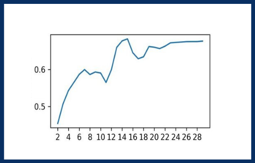
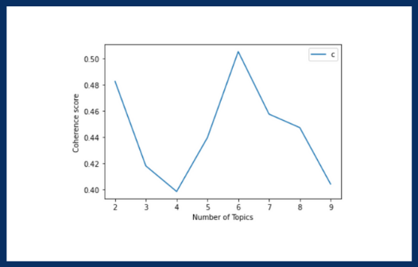
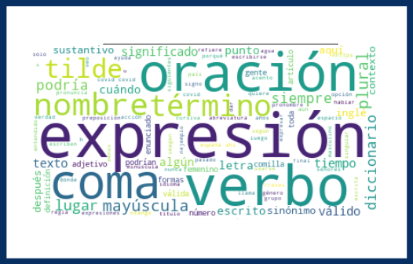

Trabajo de fin de máster
exTRAE: Clasificación de tuit dirigidos a la RAE mediante las herramientas de modelado de tópicos LSA y LDA
Jose María Hernández de la Cruz
Bárbara Saiz Escobar
Índice
Introducción
Objetivo: responder a dos preguntas fundamentales:
- ¿Cuáles son los temas más frecuentes entre los tuits que plantean dudas a la RAE?
- ¿Es posible clasificar estas dudas con el objetivo de ofrecer una respuesta automática?
Estado de la cuestión
Instituciones:
- Comunicación institucional
- Real Academia Española
- RAE en Twitter
Estado de la cuestión II
Procesos informáticos:
- Topic modeling: LSA
- Topic modeling: LDA
Latent Semantic Allocation
¿Qué hace LSA?
- Presupone que la palabras en una misma posición en distintos documentos tienen significados similares
- Aplica la Singular Value Decomposition
Coherencia
Predicción del número de tópicos
Tópicos
- Tópico 0
- Tópico 1
- Tópico 2
- Tópico 3
- Tópico 4
- Tópico 5
Nube de palabras
Latent Dirichlet Allocation
¿Qué hace LDA?
-
Presupone que:
- cada tema es una mezcla de diferentes palabras
- cada documento consta de una proporción diferente de temas Aplica:
- Teorema de Bayes
- Distribuciones de Dirichlet
Pasos de LDA simplificados:
- Cada palabra en un tema: frecuencia de tema o frecuencia de palabra
- Frecuencias notables de ambas distribuciones --> probabilidades condicionales para cada uno de los temas
**Resultado = lista tópicos + relación de términos y pesos**
Tópicos
- Tópico 0
- Tópico 1
- Tópico 2
- Tópico 3
- Tópico 4
- Tópico 5
- Tópico 6
Visualizacíon de resultados
Coherencia
Decisión manual según semillas: lista de distribuciones de tópicos y términos obtenida por el algoritmo cuando su parámetro random state no está definido.
Resultados
Ejemplo 1
#RAEconsultas #dudaRAE En la frase "La tortilla, con cebolla está más rica", ¿puede ir esa coma tras el sujeto?, ¿sería una posible excepción de la "coma criminal"? Porque hay un matiz de diferencia con "La tortilla con cebolla está más rica". ¿Cómo lo marco si no es con la coma?
— Somos La Ballena (@SomosLaBallena) January 31, 2020
Ejemplo 2
#raeconsultas #dudaRAE @RAEinforma Una pregunta, en la frase 'No importa cuanta cantidad de patata echemos, siempre y cuando no sea ninguna', cuál es el significado. Siempre y cuando sea alguna, o siempre y cuando sea ninguna.
— Tite05 (@Tite05YT) December 31, 2020